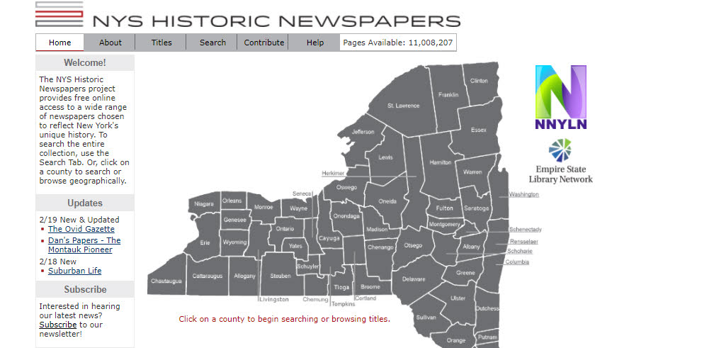
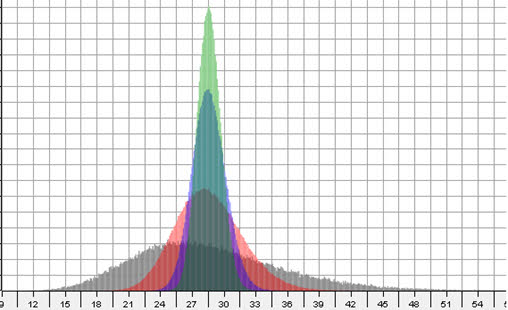

This project explores the data of the Database of animal aging and logevity found here: I imported the data into a SQL database and made a few discoveries.
I created a Tableau Dashboard visualizing some of the data.
SQL/Tableau
A simple project in SQL exploring data on pregnancies, births and abortions to discover which states had higher pregnancy rates for women under the age of 20 than the US average for years 2000-2017.
SQL

This project tests the Central Limit Theorem in statistics using a height/weight data set and subsamples to determine if it is reliable to use a subsample of data to extrapolate information about the greater data set. The Central Limit Theorem is used everywhere, but perhaps most notably in polling, and states "that if you have a population with mean μ and standard deviation σ and take sufficiently large random samples from the population with replacement , then the distribution of the sample means will be approximately normally distributed." Does it work? Let's explore.
Python/Jupyter Notebooks
In the game show "Let's Make a Deal" from the 1980's, the host Monty Hall presents contestants with the option to win a prize that is hidden behind one of three doors. Behind the two other doors is a valueless prize. When a contestant chooses a door (let's say door #1), Monty then reveals one of the other two doors that does not contain the major prize (let's say door #3) and then asks the contestant if they would like to stay with their original selection (door #1) or switch to the unrevealed door (door #2). Will switching increase your odds of winning? This python script uses python Class, Function, and a bit of logic and numpy to find out.
Python/Jupyter Notebooks
To complement the Paul Smith's College library computer availability map and help students find available computers via text messaging, I created library SMS services using Twilio and PHP.
PHP, Twilio
I implemented a “New Books” display on the front of the Paul Smith's College library web page using some book provider open APIs for book covers and information.
Python, PHP, HTML/CSS